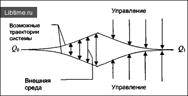

Закон необходимого разнообразия

По определению У. Р. Эшби, первый фундаментальный закон кибернетики заключается в том, что разнообразие сложной системы требует управления, которое само обладает некоторым разнообразием. Иначе говоря, значительное разнообразие воздействующих на большую и сложную систему возмущений требует адекватного им разнообразия её возможных состояний. Если же такая адекватность в системе отсутствует, то это является следствием нарушения принципа целостности составляющих её частей (подсистем), а именно - недостаточного разнообразия элементов в организационном построении (структуре) частей.
Ограничение разнообразия в поведении управляемого объекта достигается только за счет увеличения разнообразия органа управления (управленческих команд). Чтобы достигнуть минимума разнообразия выходных реакций (результатов деятельности) системы, управляющий орган должен быть способен к выработке определенного минимума команд и сигналов. Если его мощность ниже минимума, он не способен обеспечить полное управление.
Процесс управления в конечном счете сводится к уменьшению разнообразия состояний управляемой системы, к уменьшению её неопределенности. В соответствии с этим законом, с увеличением сложности управляемой системы сложность управляемого блока также должна повышаться. Поэтому все большее усложнение аппарата управления корпорациями, холдингами, финансово-промышленными группами, и т. п. организациями и их частями в современных условиях - это закономерный процесс. Другое дело, что восполнять разнообразие управляющей системы нужно за счет внедрения компьютерных и других прогрессивных технологий управления и математических методов, а не за счет привлечения дополнительных людских ресурсов.
Закон необходимого разнообразия* имеет принципиальное значение для разработки оптимальной структуры системы управления. Если центральный орган управления при сохранении разумных размеров не обладает необходимым разнообразием, то следует развивать иерархическую структуру, передавая принятие определенных решений на нижние уровни и не допуская, чтобы они превращались в передаточные инстанции. Неудовлетворительные результаты проводимой в стране экономической реформы объясняются неадекватной реакцией органов управления. В стране увеличивается разнообразие форм собственности, разновидностей структурных формирований объектов управления, моделей хозяйствования и т. п. В соответствии с этими изменениями необходимо систему управления таким развитием привести в соответствие с законом необходимого разнообразия (обеспечить льготное кредитование структурных преобразований, разумное налогообложение развивающихся предприятий, государственную политику подготовки и переподготовки кадров и т. п. ).
С позиции теории управления главнейшим моментом, характеризующим сложность системы, является её разнообразие. Поэтому определение степени оптимального разнообразия при разработке любых систем - организации производства, планирования, обслуживания, оперативного управления, систем оплаты труда и т. д. - является одним из наиболее важных и первоочередных этапов использования кибернетики при проектировании и функционировании организации.
Этот вывод хорошо подтверждает и народная мудрость: "Ум хорошо, а два лучше", "Один в поле не воин". Заболевание организма человека очень часто связано с отсутствием необходимого и достаточного разнообразия в рационе питания, режиме работы и отдыха. Таким образом, соблюдение закона необходимого и достаточного разнообразия в проектировании и функционировании организационных систем повышает их эффективность и наоборот.